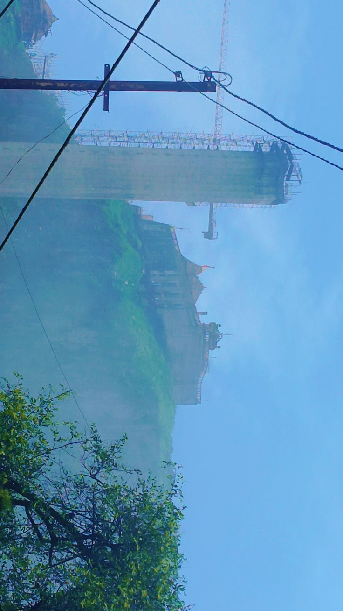
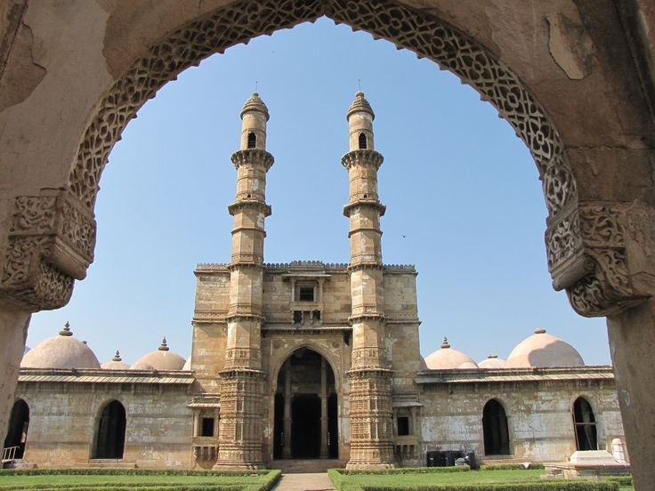

A Thrilling Morning: My First Hill Drive to Pavagadh
Introduction
Some journeys are not just about reaching a destination—they’re about the experiences along the way. Last weekend, my friends and I decided to escape our daily routine and head to Pavagadh. What started as a simple plan soon turned into one of the most exciting road trips of my life.
An Early Start Full of Excitement
The alarm rang at 6:00 AM, and unlike regular college mornings, I jumped out of bed instantly. Pavagadh is only about 50 km from my home, making it a perfect destination for a short road trip. The cool morning breeze and empty roads made the journey peaceful and refreshing.
Facing My Fear on the Hill Drive
The highlight of this trip wasn’t just the temple—it was the drive itself. For the first time in my life, I drove a car on steep, winding hill roads. As the incline increased, my heart started racing and I gripped the steering wheel tightly.
Slowly, fear turned into confidence. With every turn, the excitement grew. The breathtaking views from the driver’s seat made the experience truly unforgettable.
The Climb and Divine Darshan

We reached Pavagadh around 9:00 AM and headed towards the ropeway, but it was extremely crowded with long queues. Instead of waiting, we decided to climb the stairs on foot.
The climb felt adventurous and refreshing. After reaching the top, we did darshan of Ma Mahakali, took prasad, and enjoyed the peaceful yet energetic atmosphere.
An Unexpected Twist: Flat Tire Trouble
Just when we thought the adventure was over, we discovered that our car had a flat tire. Instead of panicking, we worked together, used the jack and spare wheel, and changed the tire ourselves.
It was tiring, but it felt like a true road trip moment—challenging yet satisfying.
Food, Chai, and the Journey Back
By the time everything was fixed, it was around 1:00 PM and we were starving. We stopped nearby for a hearty lunch, which felt well deserved.
On the way back home, we made one final stop for hot chai and nasta, chatting about the hill drive, the darshan, and the unexpected puncture.
Final Thoughts
From my first-ever hill drive to peaceful darshan and an unexpected challenge, this trip had everything—thrill, spirituality, and teamwork.
If you’re planning a trip to Pavagadh, start early to avoid crowds and be ready for surprises. The journey is absolutely worth it.